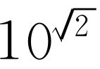

第22章 代数学
§22-1 加法和乘法
在研究振动系统时，我们将有机会用到一个在全部数学中最值得注意，而且几乎令人惊奇的公式。从物理学家的观点来说，可以在二三分钟内写出这个公式，然后应用下去。但是科学不仅具有它的实际用途，而且也是一种理智上的享受。因此，对于这种令人惊异的珍宝，我们不是只花几分钟时间写出算了事，而是围绕这个珍宝精心设计出一个数学分支，这个数学分支就称为初等代数学。
也许你要问，“在物理课上，讲数学干什么？”可能有几个原因：首先，当然数学是一种重要的工具，但这只能成为我们花上两分钟写出公式的理由。另一方面，在理论物理中，我们发现所有定律都能写成数学形式，从而使它们变得简单而优美。所以，从根本上说，为了了解自然界，就得对数学关系式有深刻的理解。但是，真正原因还在于研究这个课题本身就是一种乐趣，虽然我们人类把自然界划分为各种不同的领域，而且在不同的系科中设有不同的课程，但是这种划分完全是人为的，我们既然发现了这种理智上的乐趣，就应享受这种乐趣。
我们在这个时候更详细地来研究代数学，还有另一个原因，那就是尽管我们大多数人在高中学过代数，但那毕竟是第一次接触，所有的公式都是陌生的，学起来就像现在学物理一样吃力。经常回顾一下我们曾经学过的领域，看一下整个事物的概貌和图像，常常会引起我们的无穷的乐趣。也许有一天，数学系的人会用和我们说明在物理课上要学数学的同样方式，在他们的课程中开出一门力学课来。
我们将不去严格按照数学家的观点来讲代数学，因为数学家的主要兴趣是如何证明数学上的各种命题，并有多少假定是绝对必需的，那些则不需要。他们对已经证明的结果不那么感兴趣，我们则不然。例如，我们会发现毕达哥拉斯定理，即直角三角形两边平方之和等于斜边的平方是十分有趣的；这是一个很有意义的事实和一件奇妙而简单的事情，无需讨论它是怎样证明的、在证明过程中用到哪些公理，就可以正确判断它的价值。因此，本着同样的精神，如果可能，我们将定性地叙述初等代数体系。我们说初等 代数，是因为存在着另一个称为现代 代数的数学分支，在那里有些规律，如ab =ba ，被抛弃了，它仍然称为代数，但我们不准备进行讨论。
我们将从中间开始讨论这门学科。假定大家已经知道了什么是整数，什么是零，以及把一个数增加一个单位是什么意思。你也许会说：“这不是中间！”但是，从数学观点来看，这确是中间，因为我们还可以进一步追溯，为了导出 整数的某些性质而叙述集合论。但是我们不向这个数理哲学和数理逻辑的方向探讨，而是向另一个假定我们已经知道整数是什么以及它是如何计算的方向去进行研究。
假如开始时有某一个整数a ，我们一个单位接一个单位地共数了b 次，这样得到的一个数，我们称之为a +b ，这就定义了整数的加法 。
一经定义了加法，我们就能考虑下面的问题：假如开始时什么都没有，然后加上a ，接连加b次，所得结果就叫整数的乘法 ，并称之为b 乘a 。
现在，我们也能进行连乘 ：假如开始时是1，连续用a 乘b 次，我们称之为乘方 或幂 ：a 的b 次方即a b 。
根据这些定义，很容易证明，所有下述关系式都成立
这些结果是众所周知的，我们只是把它们列出，不再多加说明。当然，1和0具有一些特殊性质；例如a +0=a ，a ×1=a ，a 的一次方还是a 。
在上面的讨论中，我们还必须假定其他一些性质，如连续性和有序性，对这些性质是很难下定义的，这里就把它留给严格的理论去探讨吧！此外，我们写下的“法则”肯定是太多了，其中有一些是可以从另一些推导出来的，但是我们不考虑这些了。
§22-2 逆运算
除了进行加法，乘法和幂的直接运算外，还有逆运算，其定义如下：设a 和c 为已知，我们要求出满足等式a +b =c ，ab =c ，b a =c 这些方程的b 的值。假如a +b =c ，b 就定义为c -a ，这就叫减法 。称为除法的运算也很清楚：如果ab =c ，则b =c /a 定义了除法——它是等式ab =c 的一个反过来的解。再如有一个幂b a =c ，我们要问“b 是什么？”，b 称为c 的a 次方根 ： 。例如，假使问“什么整数自乘到3次幂等于8？”答案是8的立方根 ，即2。因为b a 和a b 不等，就有两 个与幂有关的逆问题，另一个逆问题是：“2的几次幂等于8？”这叫取对数 。如果a b =c ，我们写作b =log a c 。这种与其他运算相比，较为繁琐的表示方法并不意味着它已超出初等范围，至少对于整数来说是如此。虽然，对数在代数课程中出现较晚，实际上，它和开方问题一样简单，不过是同一代数方程的另一类解而已。直接运算和逆运算可归纳如下
这就是整个概念。这些关系式或法则对整数来说是正确的，因为它们是由加法、乘法与幂的定义推得的。我们打算讨论一下是否能使a ，b ，c 所代表的客体的范围扩大，而又使它们同样遵循这些法则 ，虽然在那种情况下（a +b ）之类的运算已经不能直接应用，比方说通过加1或整数连乘等运算方式来定义了。
§22-3 抽象和推广
当我们用所有这些定义去解简单的代数方程时，很快就会发现下述这些不可解的问题。假使我们要解等式b =3-5，根据减法的定义，我们必须找一个数，加上5之后得到3。当然，找不出 这个数，因为我们只考虑正整数；这是一个不可解的问题。然而，有一个方法，这就是加以抽象和推广，这是一个伟大的设想。我们在包括整数和那些运算法则的整个代数结构中抽象出加法和乘法的原始定义，保留式（22.1）和式（22.2）的法则，并认为它们对更广泛的一类数一般 也是正确的，尽管这些法则原来是从一小部分数（正数）中得出的。这样，不是用符号化的整数来定义法则，而是用法则作为符号的定义，从而使符号代表了更一般的数类。例如，只从运算法则出发，我们就能说明3-5=0-2。实际上，不难证明，只要定义一组新的数列：0-1，0-2，0-3，0-4，等等，并称之为负整数 ，我们就能做所有的减法。然后，我们也可以应用所有其他法则，如a （b +c ）=ab +ac 等，来找出负整数相乘的法则，并将发现，实际上对负整数来说，所有法则仍和正整数相同。
于是，我们扩大了这些法则的适用范围，但符号的含义不同了。
人们不能说-2乘5的真正含义是把5连续相加-2次，这是毫无意义的。但尽管如此，根据这些法则所做的一切事情仍然都是正确的。
在取幂时出现了一个有趣的问题。假如我们希望找出a （3-5） 的含义，我们只知道3-5是方程式（3-5）+5=3的一个解。由于知道了这一点，也就知道了a （3-5） ·a 5 =a 3 。因此，根据除法的定义，a （3-5） =a 3 /a 5 。稍加整理，就可简化成1/a 2 。因此，我们发现，负幂是正幂的倒数，但1/a 2 是一个没有意义的符号，因为假如a 是一个正整数或负整数，它的平方大于1，而我们仍然不知道1被大于1的数去除是什么意思！
前进！伟大的构思在于继续进行推广；当我们发现另一个不能解决的问题时，就延拓数的领域。考虑除法：我们找不出这样一个整数，即使是负整数，它等于3除以5所得出的结果。但是，如果假定所有的分数也满足这些法则，我们就能够讨论分数乘法和加法，而且一切运算都能像前面一样顺利进行。
再举一个幂的例子：a 3/5 是什么？我们只知道（3/5）·5=3，因为这是3/5的定义。于是我们也可以知道（a （3/5） ）5 =a （3/5）·5 =a3 ，因为这是法则之一。然后，根据根的定义，我们得出 。
按照这种方式，利用运算法则本身来帮助我们下定义，我们就能够解释在各种符号中引进分数的含义——这些并不是任意的。值得注意的是所有这些法则对于正整数和负整数以及分数都同样适用！
我们继续进行推广。还有什么不能解的方程吗？是的，还有。例如，下面一个方程就不能解： ，找不到一个有理数（一个分数），它的平方等于2。当然现在这个问题是很容易回答的。我们懂得十进位制，因此不难理解可以用一个无穷尽的小数作为2的平方根的一种近似。在历史上，这个想法给古希腊人带来了很大困难。为了真正严格地 对此下定义，就需要引进与连续性和有序性有关的内容，而在推广的过程中，这一点恰恰是最困难的一步。戴德金（Dedekind）正式和严格地解决了这个问题。但是，如果不考虑问题的数学严格性，也很容易理解我们意思是要找出一个近似的分数，或理想的分数数列（因为任何十进小数，在某一处中断的时候，肯定是一个有理数），这个数列一直继续下去，就越来越接近所要求的结果。我们所要讨论的问题到此已经足够了，它使我们能够处理无理数的问题，只要功夫深，我们就能计算像2的平方根之类的数，并准确到任何需要的精度。
§22-4 无理数的近似计算
下一个问题是研究幂为无理数的情形。例如，我们想定义
。在原则上答案是很简单的。假如我们把2的平方根近似计算到某一位小数，那么幂就成了有理数，我们利用上面的办法取这个近似根，就能得出 的近似值
。然后，我们还可以多取几位小数（它仍为有理数），找出它相应的根，这是更高次方的根，因为分数的分母更大，这样就得到一个比较好的近似式。当然，这里包含要求出某种开很高次方的根，然而这项工作是相当困难的，那么，怎样来对付这个问题呢？
的近似值
。然后，我们还可以多取几位小数（它仍为有理数），找出它相应的根，这是更高次方的根，因为分数的分母更大，这样就得到一个比较好的近似式。当然，这里包含要求出某种开很高次方的根，然而这项工作是相当困难的，那么，怎样来对付这个问题呢？
在计算平方根、立方根和其他低次方根时，我们可以采用一种算术方法，一位小数接着一位小数地求出根来。但是计算无理数幂以及随同出现的对数（逆问题）时，所需的劳动量极大，而且不能用简单的算术方法得出。因此，有人作了一些帮助我们计算这些幂的表——对数表或幂指数表，分别视表的制作方式而定。这仅仅是为了节省时间，如果我们要计算某个数的无理数幂，只要查一下表，而无需去计算它。当然，这种计算只是一个技术问题，但也是一个有意义的问题，而且具有重大的历史价值。首先，我们不仅要解 ，而且要解10 x =2，即x =log10 2的问题。这不是一个对所得结果要定义一类新的数的问题，而仅仅是一个计算问题。答案就是一个普通的无理数，一个无穷尽的小数，而不是一类新的数。
现在我们就来讨论这类方程求解的问题。整个概念实际上是非常简单的。假如我们能计算101 ，104/10 ，101/100 ，104/1 000 等等，并把它们乘在一起，我们就能得到101.414… ，即 ，这就是计算这类问题的一般想法。但是，代替计算101/10 等等，我们将计算101/2 ，101/ 4等等。在开始计算之前，应该解释一下，为什么用10做这么多工作，而不用其他数。当然，我们知道，对数表具有很大的实用价值，完全不限于开方的数学问题，因为对于任何底，都有
logb （ac ）=log b a +log b c .（22.3）
这个关系我们都很熟悉，只要有一张对数表，就可以用这个关系式来实际计算几个数相乘。唯一的问题是我们将取什么样的底b 来进行计算？用什么作底都无关紧要，在任何时候都可应用同样的公式；如果我们采用某一特定底的对数，那么，只要改变一下尺度，即乘上一个因子就可以求得任何其他底的对数。假如用61乘等式（22.3），这个等式仍然是千真万确的，又如果我们有一张以b 为底的对数表，某个人用61去乘表上的所有数，这不会引起任何本质差别。假使我们已经知道以b 为底的所有数的对数，也就是说，因为我们已经有了一个表，我们就能解方程b a =c ，不管c 取什么数值。现在的问题是要求出同一个数c 对别的底，比如说x 的对数。我们想要解方程 。这是很容易的，因为我们总可以写出x =b t ，知道了x 和b ，就可以确定t 。实际上，t =log b x 。如果把x =b t 代入前式，再对a′ 求解，我们看到 。换句话说，ta′ 是以b 为底的c 的对数。这样a′ =a/t ，因而以x 为底的对数正好等于一个常数1/t 乘以b 为底的对数。因此，只要乘上一个常数1/log b x ，任何对数表就与其他底的对数表相等。这就允许我们选择一个特殊的底，而为了方便起见，我们就取10为底（可能有人还会提出这样的问题，是否存在某一个自然数，以它为底时，所有事情会变得更简单一些，以后我们会找出这个问题的答案。目前，我们仅采用以10为底）。
现在就来看一看如何计算对数。开始时我们曾用尝试法来逐次计算10的平方根。其结果如表22-1所示。10的幂指数列在第一行，而10 s 的值列在第三行。于是101 =10。10的1/2次方很容易得出，因为这是10的平方根，对计算任何一个数的平方根有一个众所周知的简单办法 [1] 。用这个办法得出的第一个平方根是3.162 28。这有什么用呢？它已经告诉我们一件事，即如何求100.5 ，因此我们现在至少已经知道了一个 对数。假如我们要想知道3.162 28的对数，那么答案是接近0.500 00．但是，这还不够，很清楚，我们需要知道更多的知识。因此，我们再次求平方根，得出101/4 是1.778 28。现在我们有了比以前更多的对数，1.250是17.78的对数。附带说一句，如果碰巧有人问到100.75 ，这个值可以求出，因为它就是10（0.5+0.25） ，因此，它就是表中第二个数和第三个数的乘积。如果在第一行中s 的数目足够多，使得可以由它们构成几乎任何数，那么在第三栏中取适当的数相乘后，我们就能求出10的任何次幂。这就是我们的打算。这样，我们依次求出了10个10的平方根，这就是计算过程中的主要工作。
表22-1 10的逐次平方根

为什么我们不把表继续做下去，以求得越来越精确的值呢？因为我们开始注意到一些事情。当求10的一个非常小的幂时，我们得到1加上一个很小的数值，这个道理很清楚，如果要从101/1 000 得到10，就必须取它的1 000次方，因此，我们最好不从一个太大的数入手，它应该接近于1。我们还注意到加在1后面的小数初看起来好像只是每次被2去除，我们看到从1 815变成903，再变成450，225等；因此，很清楚，假如要求出下一个根，我们将取1.001 12左右，作为一种很好的近似。这里我们不是真正求出 所有平方根，而只是猜测 最后的极限。我们取一个很小的分数Δ /1 024作幂时，当Δ 接近于0，那么答案是什么呢？当然，它一定是某一个接近于0.002 251 1Δ 的数。它不严格等于0.002 251 1Δ ，然而，利用下面的技巧，可以得到一个更好的值：从10s 中减去1，再用幂指数s 去除。这应当把所有超过的数量修正到同一数值，我们看到它们都近似相等。在表的上端，它们并不相等，但越到下面，它们越接近一个常数。这个常数的值是什么？我们再来看一看这个数列是怎么进行的，它是如何随s 而变化的。它的改变分别为211，104，53，26。很明显，这些变化中的每一个量都非常接近前一个量的一半，越到下面越是如此。因此，如果继续下去，下面的变化量应是13，7，3，2和1，略有上下，或总和为26。因此，只不过多出了26，这样，我们就求出了真正的数目是2.302 5（实际上，以后我们会看到准确 的数应是2.302 6，但是为了保持真实起见，我们将不改动算术上的任何东西）。根据这张表，通过把幂化为以1 024为分母的分数的组合，就能算出10的任何次幂。
我们来实际计算一个对数，因为我们将采用的过程就是实际制作对数表的过程。运算程序如表22-2所示，数值取自于表22-1（第二和第三栏）。
表22-2

* 这里方括号内的数字应是10的幂。——译者注
假设我们要求2的对数，也就是要知道10的几次幂等于2。能用10的1/2次幂吗？不能，太大了。换句话说，我们可以看出答案应比1/4大，而比1/2小。让我们把因子101/4 去掉，用1.778…去除2，得到1.124…，等等。我们知道应从对数中减去0.250 000。现在我们要求出1.124…的对数，最后，我们再加回1/4，即256/1 024。然后在表中找出刚好低于1.124…的数，那是1.074 607。所以我们再用1.074 607去除，得1.046 598。从这里，我们发现2可以写成表22-1中如下几个数字的连乘积
2=（1.778 28）（1.074 607）（1.036 633）（1.009 035 0）（1.000 573）.
剩下来还有一个因子（1.000 573），自然，它已超出了我们表中的范围。要求出这个因子的对数，我们采用已有的结果10 Δ /1 024 ≈1+2.302 5Δ /1 024，求得Δ =0.254。因此，我们的答案就是10的如下次幂：（256+32+16+4+0.254）/1 024，加起来就得到308.254/1 024。除得的结果是0.301 03，因此，我们求出log10 2=0.301 03，这正好精确到五位数字！
这就是1620年哈利法克斯（Halifax）的布里格斯（Briggs）先生原来计算对数的方法。他说：“我连续计算了10的54个平方根。”我们知道他只是真正计算了前面27个，因为其余的可以利用Δ 的技巧得出。他的工作包括计算了27次10的平方根，就次数来说，并不比我们做的10次超过很多。然而他的工作量要比我们的大得多，因为他计算到16位小数，而且在发表时，把结果减到14位小数，所以没有四舍五入的误差。他用这个方法列出了一个14位小数的对数表，这是十分冗长单调的工作。但是300年来所有的对数表都借用了布里格斯先生的表，只是减少了几位小数。直到现在，由于有了计算机，才有独立计算出来的新对数表。今天，利用某些级数的展开，已成为计算对数更有效的办法。
在上述过程中，我们发现了一些相当有趣的事情，即对于一个非常小的幂指数ε 来说，我们可以很容易算出10 ε ；通过单纯的数值分析，我们发现10 ε =1+2.302 5ε 。当然，这也意味着如果n 非常小的话，10 n /2.302 5 =1+n 。现在任何其他底的对数只是以10为底的对数的倍数。我们以10为底仅仅是由于我们有10个手指头，用在算术上（十进制）比较方便，但是假如我们要找出一个数学上自然的底，这就与人的手指头的数目毫无关系了，我们可以试用某种方便而自然的方式来改变对数的标度 。人们已经采用的方法是利用2.302 5…去乘所有的以10为底的对数来重新定义对数。这相当于采用了另外的底，叫做自然 底或以e为底。注意当n →0时，loge （1+n ）≈n ，或e n ≈1+n 。
很容易求出e:e=101/2.302 3 或100.434 294… ，是一个无理数幂。我们那张10的逐次平方根表不仅可以用来计算对数，还能用来计算10的任何次幂，现在我们用它来计算这个自然底e。为了方便起见，我们把0.434 294…改写成444.73/1 024。这里，444.73=256+128+32+16+8+4+0.73。既然它是一个和的指数，因此e将是下面几个数的乘积
（1.778 28）（1.333 52）（1.074 607）（1.036 633）（1.018 152）（1.009 035）（1.001 643）
=2.718 4.
（唯一的问题是最后一个数0.73，表上没有，但是我们知道，假如Δ 足够小，则结果是1+2.302 5Δ /1 024）．把各个数相乘就得到2.718 4（它应该是2.718 3，但这已经相当好了）。这个表提供了计算所有的无理数幂和无理数对数的方法。处理无理数时就可应用这个表。
§22-5 复数
到目前为止，尽管做了上面的全部工作，我们仍不能解出所有的方程！例如，-1的平方根是什么？假设我们要求出x 2 =-1。没有 一个有理数，一个无理数，或我们迄今所发现的任何一个数的平方等于-1。因此，我们又得把数推广到更为广泛的范畴。假设x 2 =-1有一个特定的解，我们称之为i，根据定义，i具有这种性质，它的平方等于-1。这几乎是我们对它所能讲的全部东西。当然，方程x 2 =-1的根不只是这一个。有人会写出i，但别的人也可能说：“不，我宁愿写-i，我的i是你的i的负值。”实际上这也正是 一个解。由于i具有唯一的一个定义是i2 =-1，在我们所能写出的任何方程中，如果所有i都改变符号，则方程同样成立。这个过程称为取共轭复数 。现在，我们可以根据所有的法则，把i依次递加，用其他数乘i，使i和其他数相加等等，以此来构成种种数。以这种方式得出的数，我们发现它们全部都可以写成p +iq 的形式，这里p 和q 称为实 数，也就是直到现在为止我们曾定义过的数。数i称为虚数单位 。i的任何实数倍称为纯虚数 。最一般的取p +iq 的形式的数a 称为复数。应用过去的法则，比方说，把两个这样的数相乘，即（r +is ）（p +iq ），不会出现任何差错。因而我们有
因为i·i=i2 =-1。所以，属于法则式（22.1）的所有数，一定具有这种数学形式。
现在，也许你还会说：“这样下去就没有底了！我们定义了虚数的幂和所有其他数，但当我们把这一切都做完了之后，又会有人提出另一个不能解的问题，如x 6 +3x 2 =-2。于是，我们又得重新推广！”但是，结果表明，有了-1平方根这个发明，任何代数方程都能解了 ！这是一个奇妙的事实，我们留给数学系的人去证明。证明非常漂亮，也非常有趣，但当然不是自明的。实际上，最自然的推测是我们必须一次又一次地发明。但最使人惊讶的是我们并不需要这样做。这是最后一次发明。在发明复数之后，我们发现，运算法则对复数仍然适用，我们不需要再发明新东西了。借助于这些数目有限的符号，我们能求出任何复数的复指数幂和能够解任何写成代数形式的方程。我们再也找不到新的数了。例如，i的平方根具有确定的结果，它不是新的量；而ii 也是某一个量。我们现在就来讨论这一点。
我们已经讨论过乘法，加法也很容易；假如我们把两个复数相加，（p +iq ）+（r +is ），结果是（p +r ）+i（q +s ）。现在，我们能做复数的加法和乘法了。但是，真正的问题当然在于计算复数的复指数幂 。事实证明，这个问题实际上并不比计算实数的复指数幂困难。因此，现在我们着重研究计算10的复指数幂的问题，这不只是一个无理数幂，而且是10（ r +i s ） 。当然，在任何时候我们都要用到式（22.1）和（22.2）的法则。于是
10（ r +i s ） =10 r ·10i s （22.5）
我们已经知道如何计算10 r ，而且总可以把某个数和其他某个数相乘，因此问题仅在于计算10i s 。我们令它为某一个复数x +iy 。于是问题成为，已知s ，求出x 和y 。现在假如有
10i s =x +iy .
这个等式的共轭复数也一定成立，即有
10-i s =x -iy .
（这里我们看到，利用我们的法则，无需进行任何实际计算，就能推导出一些结果）。把两式相乘，就能推导出另一些有趣的结果
10i s 10-i s =100 =1=（x +iy ）（x -iy ）=x 2 +y 2 .（22.6）
由此可见，如果求出x ，也就有了y 。
现在的问题是如何 计算10的一个虚指数幂。有什么窍门没有？我们可以应用所有的法则，直到碰壁为止，但是这里有一条合理的途径：假如对任一特定的s 我们能够计算，那么对所有其他的数我们也能够计算。如果对某一个s 我们知道了10i s 的值，那么要求出与两倍s 所对应的幂，可以把前一个数平方，依此类推。但是，即使对一个特殊的s 值，我们怎样来求10i s 呢？为此，我们将再作一个补充假定，它不完全属于所有其他法则的范畴，但是它能导出一个合理的结果，并帮助我们前进：当幂很小时，我们将认为，只要ε 很小，不管是实数ε 还是复数ε ，10 ε =1+2.302 5ε ，这个“定律”都正确。于是从这个定律是普遍正确的假定出发，它告诉我们，当s →0时，10i s =1+2.302 5·is 。因此，我们确信当s 很小时，比如说s 是i/1 024，就能得到10i s 的一个相当好的近似值。
现在，我们来列出一个表，根据这个表我们能够算出10的所有 虚指数幂，即算出x 和y 。具体过程如下：开始的第一个幂是指数幂i/1 024，我们认为它非常接近于（1+2.302 5i/1 024）。这样，我们在开始时有
10i/1 024 =1.000 0+0.002 248 6i，（22.7）
取这个数自乘，我们就能得出更高一级的虚指数幂。实际上，我们可以把计算对数表的步骤反过来，计算式（22.7）的平方，4次方，8次方等，从而建立表22-3中的值。我们发现一件有趣的事，x 的值开始时是正的，然后转为负。等一会儿我们将稍微详细地研究这个问题。但首先我们非常想找出对于怎样的s 值，10i s 的实部为零。此时，y 值将是i，因此，应该有10i s =i，或is =log10 i。作为应用这个表的一个例子，就像前面计算log10 2一样，现在我们利用表22-3来计算log10 i。
表22-3 10i/1 024 =1+0.002 248 6i的逐次平方值
*应该是0.002 248 6i。
表22-3中的哪些数相乘才会得到一个纯虚数呢？经过稍加采取尝试法之后，我们发现，要想最大程度地减小x ，最好是用“128”乘“512”。相乘的结果是0.130 56+0.99144i。接着我们发现，应该用一个数来乘这个结果，这个数的虚部差不多等于我们想消去的实部的大小。因此，我们选“64”，它的y 值是0.143 49，最接近0.130 56。第二次乘的结果是-0.013 50+0.999 93i。现在我们走过头了，必须用0.999 96+0.009 00i去除 。我们该如何来做这一步呢？通过改变i的符号，用（0.999 96-0.009 00i）去乘（假如x 2 +y 2 =1，就能这样做）即可。继续这样做下去，我们求出要给出i所需的10的整个幂数是
i（512+128+64-4-2+0.20）/1 024，即 698.20i/1 024.
如果10取这个指数幂，就能得出i。因此，log10 i=0.682 26i。
§22-6 虚指数
为了进一步研究取复数虚指数幂的问题，我们来观察一下10的幂。为了进一步按照表22-3的方式来看一下其中的负号会出现什么情况，我们逐次 取10的幂，但不是每次将幂增加一倍。这些都列在表22-4上，其中我们取10i/8 ，并每次乘上10i/8 这个数。我们看到x不断减小，经过0，又几乎达到-1（如果我们能够求出p =10和p =11之间的值，那么很明显它就趋近于-1），接着又向回摆。y 的值也是在来回变化。
在图22-1中，黑点表示在表22-4中出现的数，画出线来只是为了帮助你更加形象化。因此，我们可以看到数x 和y 在振动；10i s 在不断重复 ，这是一个周期性 变化的量，这一点是相当容易解释的，因为假如10的某次幂是i，那么它的4次方就是i2 的平方 。这必将又是+1，因此，既然100.68i 等于i，取它的4次方后，我们发现102.72i 等于+1。所以，如果要求出103.00i ，我们可以把它写成102.72i 乘100.28i 。换句话说，它有一个周期，并且不断重复出现。当然，我们可以辨认这条曲线的形状像什么！它们看上去就像正弦和余弦曲线，我们暂且称它们为代数正弦和代数余弦。然而，我们将不用10为底，而是把它换成自然底，这只是变一下水平标度；因此，我们用t 来表示2.302 5s ，并写出10i s =ei t ，这里t 是一个实数。现在ei t =x +iy ，我们将把此式写成t 的代数余弦加上i乘t 的代数正弦。即
ei t =cos t +isin t .（22.8）
表22-4 10i/8 的逐次幂
cos t 和sin t 有哪些性质呢？首先，比如说，我们知道x 2 +y 2 必须等于1；这一点以前证明过，这对以e为底和以10为底都同样正确。因此有cos2 t +sin2 t =1。我们还知道，当t 很小时，ei t =1+it ，因此，cos t 接近于1，而sin t 接近于t ，如此等等，这些从取虚指数幂得来的值得注意的函数的所有各种性质都和三角学中的正弦和余弦的性质相同。
周期也一样吗？我们来求求看。e的几次方等于i？以e为底的i的对数是什么？前面已经得出，以10为底时它是0.682 26i，但是当把对数的标量改为e时，我们必须乘上2.302 5，由此得出1.570 9。这就是“代数的π /2”。但是，我们看到，它与正规的π /2仅在最后一位数上不同，那当然是我们算术运算的误差所造成的！这样，我们用纯粹代数的方法创造了两个新的函数，余弦和正弦，它们属于代数学，而且也仅仅属于代数学。最后，我们终于领悟到这些所发现的函数当然也是几何学的。因此，我们看到在代数和几何之间最终是有联系的。
由此我们总结出数学上最值得注意的公式
ei θ =cos θ +isin θ ，（22.9）
这就是我们的无价之宝！
我们可以用在一个平面上表示复数的办法把几何和代数联系起来，平面上一个点的水平位置是x ，垂直位置是y （图22-2）。我们用x +iy 表示任何复数。假如这个点的径向距离是r ，角度为θ ，根据代数定律，x +iy 可写成r ei θ 的形式，其中x ，y ，r 和θ 之间的几何关系如图所示。这就是代数和几何的统一。
在本章开始时，我们只懂得整数的基本概念以及如何计算，还不大知道抽象过程和推广过程的威力。由于采用了一组代数“定律”，像式（22.1）所表示的数的性质和式（22.2）所表达的逆运算的定义，我们在这里不仅能依靠自己创造出一些数，而且能制作一些有用的东西，如对数表、指数表和三角函数表（因为这些函数就是实数的虚指数幂），所有这些都只要用到10的10个逐次平方根而已！